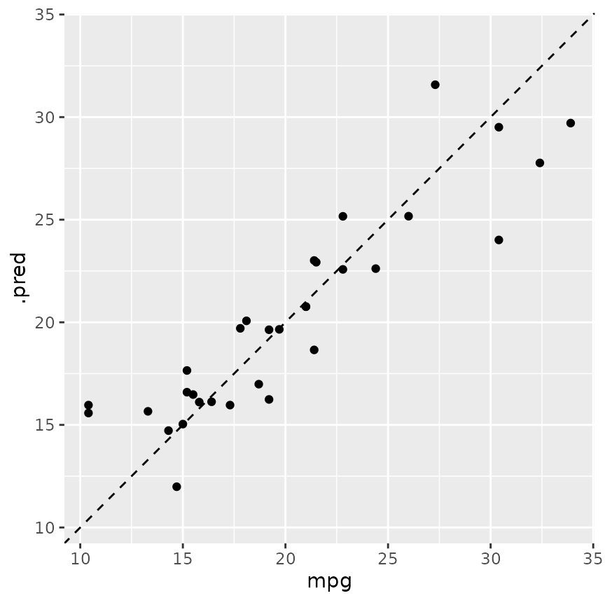
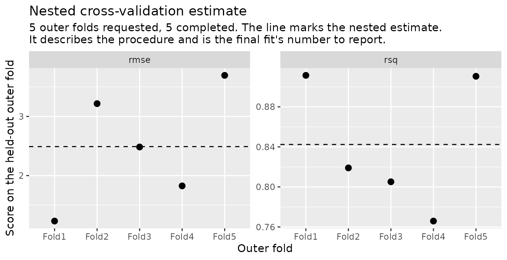

A nested run returns a nested_results, a tibble with one
row per outer fold. This page reads one run from start to finish: the
estimate, what each fold selected, the predictions and the plots.
The run
We reuse the design, the random forest and the grid from
vignette("nested-cv"). This time a
control_grid() with save_pred = TRUE keeps
each outer fold’s predictions on its assessment rows.
set.seed(1)
folds <- nested_resamples(
mtcars,
outside = vfold_cv(v = 5),
inside = vfold_cv(v = 5)
)
rf <- rand_forest(mtry = tune(), min_n = tune(), trees = 500) |>
set_engine("ranger") |>
set_mode("regression")
wf <- workflow(mpg ~ ., rf)
grid <- expand.grid(mtry = c(2L, 5L, 8L), min_n = c(2L, 10L))
set.seed(2)
res <- nested_tune_grid(
wf,
folds,
grid = grid,
control = control_grid(save_pred = TRUE)
)
res
#>
#> ── Nested cross-validation results ────────────────────────────────────
#> Outer resamples: 5-fold cross-validation
#> # A tibble: 5 × 10
#> splits id .metrics .selected .inner_metrics .notes
#> <list> <chr> <list> <list> <list> <list>
#> 1 <split [25/7]> Fold1 <tibble> <tibble> <tibble [12 × 8]> <tibble>
#> 2 <split [25/7]> Fold2 <tibble> <tibble> <tibble [12 × 8]> <tibble>
#> 3 <split [26/6]> Fold3 <tibble> <tibble> <tibble [12 × 8]> <tibble>
#> 4 <split [26/6]> Fold4 <tibble> <tibble> <tibble [12 × 8]> <tibble>
#> 5 <split [26/6]> Fold5 <tibble> <tibble> <tibble [12 × 8]> <tibble>
#> # ℹ 4 more variables: .predictions <list>, .completed <lgl>,
#> # .tuning_seed <int>, .outer_fit_seed <int>
#> ℹ Use `summary()` for what the run means: which folds failed, what
#> each one selected, and the estimate across them.Each row holds one outer fold’s score in .metrics, the
setting it chose in .selected, and every candidate (setting
tried) its inner search scored in .inner_metrics.
?nested_tune_grid describes each column.
summary() says in words how much of the design ran, what
each fold chose, and the estimate.
summary(res)
#>
#> ── Nested cross-validation results ────────────────────────────────────
#> Outer resamples: 5-fold cross-validation
#> Outer folds: 5 requested, 5 completed
#>
#> ── Selected parameters ──
#>
#> Selecting metric: rmse
#> ! mtry: 8, 8, 5, 8, 5 (folds disagree)
#> ✔ min_n: 2 (all 5 completed folds agree)
#>
#> ── Estimate (5 of 5 outer folds) ──
#>
#> rmse (standard): 2.49
#> rsq (standard): 0.842
#>
#> ℹ A nested estimate describes the tune-and-fit procedure. For a
#> procedure chosen before seeing this estimate, it is the number to
#> report for the model `nested_final_fit()` builds.The estimate
collect_metrics() averages the outer scores. Each mean
is the estimate for the whole procedure (tune, select, fit), and
std_err is the standard error of that mean.
collect_metrics(res)
#> # A tibble: 2 × 5
#> .metric .estimator mean n std_err
#> <chr> <chr> <dbl> <int> <dbl>
#> 1 rmse standard 2.49 5 0.447
#> 2 rsq standard 0.842 5 0.0293With summarize = FALSE, we get each fold’s score
instead.
collect_metrics(res, summarize = FALSE)
#> # A tibble: 10 × 4
#> id .metric .estimator .estimate
#> <chr> <chr> <chr> <dbl>
#> 1 Fold1 rmse standard 1.23
#> 2 Fold1 rsq standard 0.911
#> 3 Fold2 rmse standard 3.22
#> 4 Fold2 rsq standard 0.819
#> 5 Fold3 rmse standard 2.48
#> 6 Fold3 rsq standard 0.805
#> 7 Fold4 rmse standard 1.83
#> 8 Fold4 rsq standard 0.766
#> 9 Fold5 rmse standard 3.69
#> 10 Fold5 rsq standard 0.911vignette("estimate") explains what this number describes
and what to report.
The selections
collect_selections() stacks what each fold chose, with
the fold label beside each row. agreement() counts how many
folds chose each setting.
collect_selections(res)
#> # A tibble: 5 × 4
#> id mtry min_n .config
#> <chr> <int> <int> <chr>
#> 1 Fold1 8 2 pre0_mod5_post0
#> 2 Fold2 8 2 pre0_mod5_post0
#> 3 Fold3 5 2 pre0_mod3_post0
#> 4 Fold4 8 2 pre0_mod5_post0
#> 5 Fold5 5 2 pre0_mod3_post0
agreement(res)
#> # A tibble: 2 × 4
#> mtry min_n n prop
#> <int> <int> <int> <dbl>
#> 1 8 2 3 0.6
#> 2 5 2 2 0.4When the folds agree, the data points to one setting. When they
split, we read little into any one choice. The model to deploy comes
from nested_final_fit(), which tunes once more on all the
data, so its choice can differ from every fold’s. The estimate above is
still the number to report for that model, because the same procedure
made it.
collect_inner_metrics() stacks the inner scores of every
candidate in every fold. Here is the first fold’s RMSE for each
candidate, best first.
collect_inner_metrics(res) |>
filter(id == "Fold1", .metric == "rmse") |>
arrange(mean)
#> # A tibble: 6 × 9
#> id mtry min_n .metric .estimator mean n std_err .config
#> <chr> <int> <int> <chr> <chr> <dbl> <int> <dbl> <chr>
#> 1 Fold1 8 2 rmse standard 2.85 5 0.419 pre0_mod5_p…
#> 2 Fold1 2 2 rmse standard 2.87 5 0.435 pre0_mod1_p…
#> 3 Fold1 5 2 rmse standard 2.88 5 0.446 pre0_mod3_p…
#> 4 Fold1 5 10 rmse standard 2.88 5 0.510 pre0_mod4_p…
#> 5 Fold1 8 10 rmse standard 2.89 5 0.497 pre0_mod6_p…
#> 6 Fold1 2 10 rmse standard 3.09 5 0.548 pre0_mod2_p…The predictions
collect_predictions() stacks each fold’s predictions on
its assessment rows. On this design, every row of the data is predicted
once by a model that did not see it.
preds <- collect_predictions(res)
preds
#> # A tibble: 32 × 5
#> id mpg .pred .row .config
#> <chr> <dbl> <dbl> <int> <chr>
#> 1 Fold1 21.4 18.7 4 pre0_mod0_post0
#> 2 Fold1 14.3 14.7 7 pre0_mod0_post0
#> 3 Fold1 16.4 16.1 12 pre0_mod0_post0
#> 4 Fold1 21.5 22.9 21 pre0_mod0_post0
#> 5 Fold1 26 25.2 27 pre0_mod0_post0
#> 6 Fold1 15.8 16.1 29 pre0_mod0_post0
#> 7 Fold1 15 15.0 31 pre0_mod0_post0
#> 8 Fold2 22.8 25.2 3 pre0_mod0_post0
#> 9 Fold2 18.7 17.0 5 pre0_mod0_post0
#> 10 Fold2 15.2 16.6 14 pre0_mod0_post0
#> # ℹ 22 more rows
ggplot(preds, aes(mpg, .pred)) +
geom_abline(lty = 2) +
geom_point() +
coord_obs_pred()
The plots
autoplot() draws the selections by default, one panel
per tuned parameter and one point per outer fold.
autoplot(res)
With type = "performance", it draws each fold’s score,
with a dashed line at the estimate.
autoplot(res, type = "performance")
A fold that fails does not stop the run, and the functions above
answer over the folds that completed. collect_notes() lists
what went wrong in any fold, one that completed included.
?nested_tune_grid describes failed folds and the dplyr
verbs that keep the class.